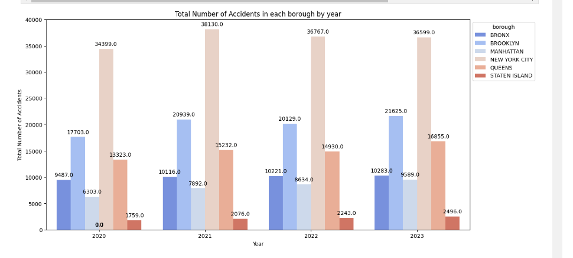

Incidents By Year
Key Observations:
- Increasing Trend in the Bronx: The number of accidents in the Bronx has steadily increased each year, with a noticeable jump from 2020 to 2021 and continuing upward in 2023.
- Brooklyn and Manhattan: Both Brooklyn and Manhattan show a gradual increase in accidents over the years, with Brooklyn maintaining higher numbers than Manhattan.
- Fluctuations in Queens: Queens also shows an upward trend, particularly between 2022 and 2023, which may indicate growing traffic or other influencing factors.
- New York City Overall: The total number of accidents in New York City fluctuates but generally remains high, reflecting its dense and busy nature.
- Staten Island: Although Staten Island has the lowest number of accidents, there is a slight increase observed each year.
Insights:
- Focus on Bronx and Queens: The Bronx and Queens might require more focused traffic safety measures and infrastructure improvements due to their rising accident numbers.
- Consistent Attention to Brooklyn and Manhattan: Continuous efforts to enhance traffic safety in Brooklyn and Manhattan are necessary to address their consistent accident rates.
- Staten Island Monitoring: Monitoring traffic trends in Staten Island to preemptively manage the increasing accident trend could be beneficial.
